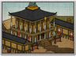

Requires
- Buildings: 
- Arts:

- Resources:

Enables
Spawned Garrisons
Basic Building Statistics (can be modified by difficulty level, arts, skills, traits and retainers)
- Cost: 6800
- -1 to recruitment time of bushi units
Description
A master writes his poetry in the blood of others.
This legendary dojo allows the training of samurai heroes, and greatly increases the experience of other units trained here. The quality of instruction is second to none. Samurai warfare was, at least initially, an affair of individuals who acted independently on the battlefield. Men would advance towards their enemies, calling out their names and achievements in the hopes of finding a worthy opponent to fight. This kind of affair is not so much a battle as a massive series of duels between brave men. A warrior tagged the head of his slain enemy, and these were displayed after the battle to determine each man's contribution to victory. It was, by the way, a very bad idea to take the head of a friend in the confusion of battle. However, the idea of individual heroism is a powerful one, and one that the way of the warrior embodied in many ways. Every warrior on the battlefield would regard a truly heroic warrior, even an enemy, with admiration.